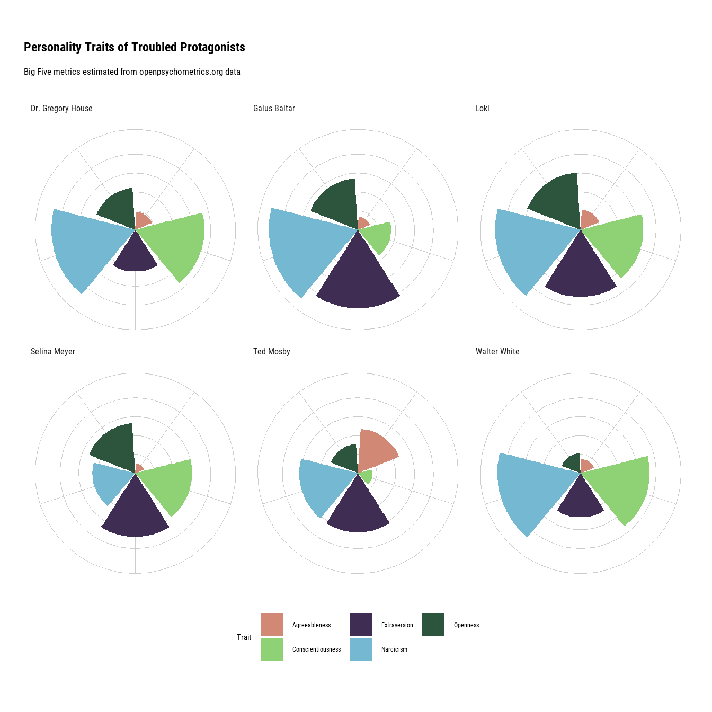

library(ggplot2)
library(tidyverse)
library(tidytuesdayR)
library(magrittr)
library(showtext)
library(hrbrthemes)
library(rsvg)2022 Week 33: Psychometrics
Setup
font_add_google("Roboto Condensed")
showtext_auto()Load Data
tuesdata <- tt_load('2022-08-16')
Downloading file 1 of 3: `characters.csv`
Downloading file 2 of 3: `myers_briggs.csv`
Downloading file 3 of 3: `psych_stats.csv`psych_stats <- tuesdata$psych_stats
head(psych_stats)| char_id | char_name | uni_id | uni_name | question | personality | avg_rating | rank | rating_sd | number_ratings |
|---|---|---|---|---|---|---|---|---|---|
| F2 | Monica Geller | F | Friends | messy/neat | neat | 95.7 | 9 | 11.7 | 1079 |
| F2 | Monica Geller | F | Friends | disorganized/self-disciplined | self-disciplined | 95.2 | 27 | 11.2 | 1185 |
| F2 | Monica Geller | F | Friends | diligent/lazy | diligent | 93.9 | 87 | 10.4 | 1166 |
| F2 | Monica Geller | F | Friends | on-time/tardy | on-time | 93.8 | 34 | 14.3 | 236 |
| F2 | Monica Geller | F | Friends | competitive/cooperative | competitive | 93.6 | 56 | 13.4 | 1168 |
| F2 | Monica Geller | F | Friends | scheduled/spontaneous | scheduled | 93.4 | 23 | 14.5 | 1173 |
Transform Data
psych_stats <- psych_stats |>
filter(str_count(question, "/") <=1) |>
separate("question", into = c("One", "Two"), sep = "/", remove = FALSE) |>
mutate(Score = ifelse(One == personality, 1, 0)) |>
select(-c(One, Two, personality, avg_rating, rank,
rating_sd, number_ratings)) |>
pivot_wider(names_from = question,
values_from = Score,
values_fn = sum)Dimension Reduction
factorRes <- select(psych_stats, -c(char_id, char_name, uni_id, uni_name)) |>
factanal(factors = 5, scores = "regression")
scores <- factorRes$scores |>
set_colnames(c("Agreeableness","Openness","Conscientiousness", "Extraversion",
"Narcicism")) |>
cbind(select(psych_stats, c(char_id, char_name, uni_id, uni_name)))
head(scores)| Agreeableness | Openness | Conscientiousness | Extraversion | Narcicism | char_id | char_name | uni_id | uni_name |
|---|---|---|---|---|---|---|---|---|
| 0.2599155 | -0.4579260 | 0.3571530 | 1.4393580 | -1.0757393 | F2 | Monica Geller | F | Friends |
| 0.2518833 | 1.9207419 | -0.0626697 | 1.1891392 | -1.5597640 | F1 | Rachel Green | F | Friends |
| 0.6608430 | 0.7265587 | -1.1785029 | -0.1903910 | 0.0073856 | F5 | Chandler Bing | F | Friends |
| 0.8283600 | 2.0439851 | -0.1671717 | -1.0484506 | -1.4319908 | F4 | Joey Tribbiani | F | Friends |
| 1.1395901 | 1.7388233 | -0.0116502 | -0.6018825 | 0.7415672 | F3 | Phoebe Buffay | F | Friends |
| -0.6986759 | -1.2381315 | -1.7009218 | 0.9037070 | -0.0672627 | F6 | Ross Geller | F | Friends |
Plot
charList <- c("Walter White", "Ted Mosby", "Dr. Gregory House",
"Gaius Baltar", "Selina Meyer", "Loki")
persPlot <- scores |>
mutate(across(1:5, ~ .x + abs(min(.x)))) |>
filter(char_name %in% charList) |>
pivot_longer(1:5,
names_to = "Trait",
values_to = "Value") |>
ggplot(aes(x = Trait,
y = Value,
fill = Trait)) +
geom_col() +
facet_wrap(~char_name) +
theme_ipsum_rc() +
coord_polar() +
scale_fill_ipsum(guide = guide_legend(nrow = 2)) +
theme(legend.position = "bottom",
axis.ticks = element_blank(),
axis.text.x = element_blank(),
axis.text.y = element_blank(),
plot.margin = margin(l=0, t = 30, b = 30),
axis.title.x = element_blank(),
axis.title.y = element_blank(),
plot.background = element_rect(fill = "white", color = NA),
panel.spacing = unit(0, "lines")) +
ggtitle(label = "Personality Traits of Troubled Protagonists",
subtitle = "Big Five metrics estimated from openpsychometrics.org data")
tmp <- tempfile()
ggsave(tmp, persPlot, device = "svg")Saving 7 x 7 in imagersvg_png(tmp, "Out/2022-08-16.png")
persPlot
sessionInfo()R version 4.2.1 (2022-06-23 ucrt)
Platform: x86_64-w64-mingw32/x64 (64-bit)
Running under: Windows 10 x64 (build 19043)
Matrix products: default
locale:
[1] LC_COLLATE=English_Australia.utf8 LC_CTYPE=English_Australia.utf8
[3] LC_MONETARY=English_Australia.utf8 LC_NUMERIC=C
[5] LC_TIME=English_Australia.utf8
attached base packages:
[1] stats graphics grDevices utils datasets methods base
other attached packages:
[1] rsvg_2.3.1 hrbrthemes_0.8.0 showtext_0.9-5 showtextdb_3.0
[5] sysfonts_0.8.8 magrittr_2.0.3 tidytuesdayR_1.0.2 forcats_0.5.1
[9] stringr_1.4.0 dplyr_1.0.9 purrr_0.3.4 readr_2.1.2
[13] tidyr_1.2.0 tibble_3.1.7 tidyverse_1.3.1 ggplot2_3.3.6
loaded via a namespace (and not attached):
[1] httr_1.4.3 bit64_4.0.5 vroom_1.5.7 jsonlite_1.8.0
[5] modelr_0.1.8 assertthat_0.2.1 highr_0.9 selectr_0.4-2
[9] cellranger_1.1.0 yaml_2.3.5 gdtools_0.2.4 Rttf2pt1_1.3.10
[13] pillar_1.7.0 backports_1.4.1 glue_1.6.2 extrafontdb_1.0
[17] digest_0.6.29 rvest_1.0.2 colorspace_2.0-3 htmltools_0.5.2
[21] pkgconfig_2.0.3 broom_1.0.0 haven_2.5.0 scales_1.2.0
[25] svglite_2.1.0 tzdb_0.3.0 farver_2.1.0 generics_0.1.2
[29] usethis_2.1.6 ellipsis_0.3.2 withr_2.5.0 cli_3.3.0
[33] crayon_1.5.1 readxl_1.4.0 evaluate_0.15 fs_1.5.2
[37] fansi_1.0.3 xml2_1.3.3 textshaping_0.3.6 tools_4.2.1
[41] hms_1.1.1 lifecycle_1.0.1 munsell_0.5.0 reprex_2.0.1
[45] compiler_4.2.1 systemfonts_1.0.4 rlang_1.0.4 grid_4.2.1
[49] rstudioapi_0.13 htmlwidgets_1.5.4 labeling_0.4.2 rmarkdown_2.14
[53] gtable_0.3.0 DBI_1.1.3 curl_4.3.2 R6_2.5.1
[57] lubridate_1.8.0 knitr_1.39 fastmap_1.1.0 bit_4.0.4
[61] extrafont_0.18 utf8_1.2.2 ragg_1.2.2 stringi_1.7.6
[65] parallel_4.2.1 Rcpp_1.0.8.3 vctrs_0.4.1 dbplyr_2.2.1
[69] tidyselect_1.1.2 xfun_0.31